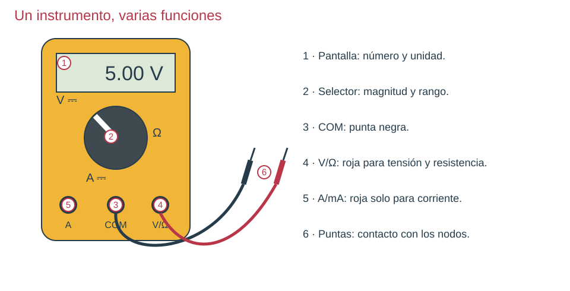
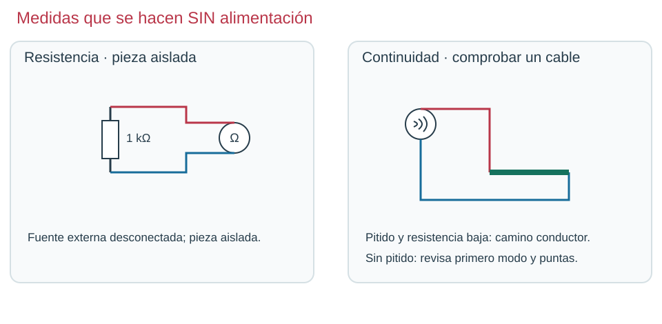

Los esquemas del capítulo acompañan las preguntas. Responde antes de consultar la explicación. Sin cronómetro.

Modelo ilustrado: localiza estas funciones en tu instrumento. La distribución y los límites dependen del modelo.En paralelo preguntas por dos puntos; en serie haces pasar la corriente por el instrumento.

El ohmímetro utiliza su propia pila. Estas dos medidas nunca se hacen con el circuito alimentado.
En el esquema de medidas, el voltímetro se conecta a P1 y P0. ¿Qué leería si movemos solo la roja a P0?
Solución y explicación
0 V: ambas puntas estarían en el mismo nodo. No demuestra que la fuente esté apagada.
Con la fuente desconectada mides 500 Ω sobre una resistencia marcada 1 kΩ que sigue montada. ¿Qué harías antes de concluir que está mal?
Solución y explicación
Mantén la fuente desconectada y levanta una patilla para aislarla. Otra resistencia de 1 kΩ en paralelo explicaría los 500 Ω. Repite la medida sin caminos alternativos; el ohmímetro usa su propia señal.